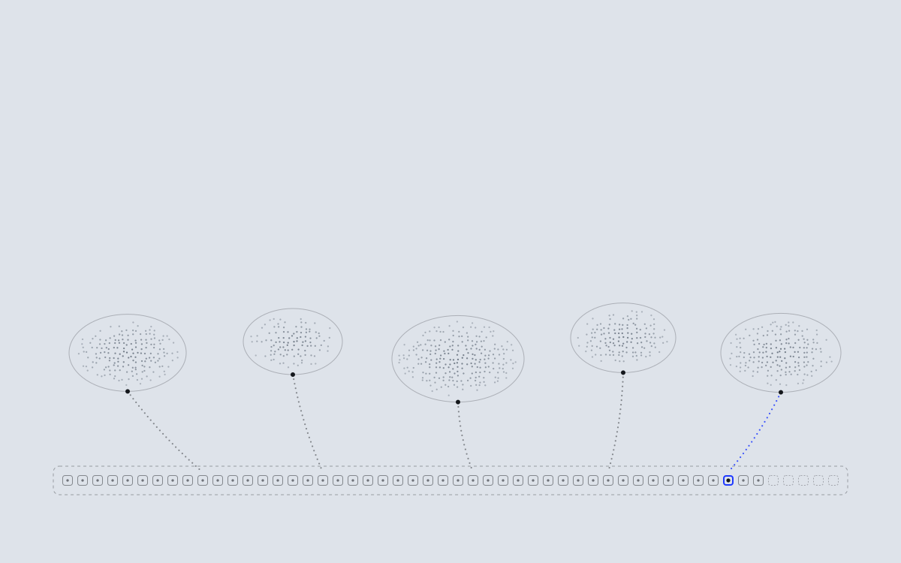

Open ValueThesisHow it worksQuestions
OPEN RESEARCH · NOT A PRODUCT · NOT A TOKEN
One ordered reference.
Every system keeps its own rules.
Each system stays whole. Only a commitment crosses into the shared order, and the order never reads it.
SHARED ORDER · PROPOSED
NEXT →
E05 · STIPPLE HORIZON · centered-statement · one-accent-slot · dashed-means-proposed · ON-SYSTEM (LIGHT)